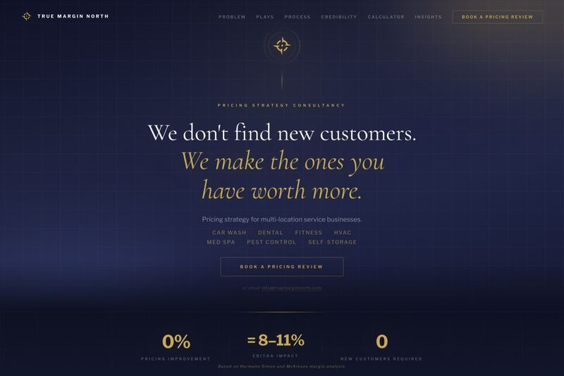

Healthcare Website Guide
Healthcare websites patients can trust quickly.
Before a patient calls, books, or fills out a form, the website has to make the practice feel safe, credible, current, and easy to reach on a phone.
For medical practices, dental offices, therapy groups, med spas, optometry, chiropractic, and specialty clinics.
What Matters
The first screen should feel calm and useful.
Patients are often comparing options quickly. The page should answer the basics before they have to dig.
Practice fit
Make the specialty, location, and primary services obvious in plain language.
Provider credibility
Use real provider photos, credentials, training, and bio structure that feels human.
Booking clarity
Patients should know whether to call, book online, request a visit, or start intake.
Review context
Reviews, testimonials, and reputation cues should support trust without making clinical promises.
Insurance or financing
Where relevant, explain payment expectations without burying the patient in policy language.
Mobile speed
The site should load and read cleanly on the phone people use while comparing providers.
By Specialty
Different practices need different page structure.
A dental site, med spa site, and therapy site should not sound like the same template with different nouns.
Dental practices
Emergency care, new patient flow, cosmetic services, financing, insurance, and provider confidence need clear paths.
Med spas
Treatment pages, before-and-after care, booking, premium cues, and compliant expectation setting matter more than hype.
Medical practices
Provider bios, treatment pages, location clarity, patient resources, and intake routing should feel organized and calm.
Therapy groups
Visitors need to understand fit, specialties, insurance, availability, telehealth, and the first-session path.
Specialty clinics
Patients need service clarity, what to expect, recovery or visit details, and enough proof to take the next step.
Healthcare pricing
See the build tiers for a focused refresh, full practice rebuild, or custom multi-location site.
Privacy-Aware Routing
Do not ask the marketing site to become the medical record.
We keep marketing forms light and route sensitive patient workflows into the systems already meant for them. That usually means the EHR, scheduler, intake platform, or HIPAA-covered tool the practice already uses.

Questions Buyers Ask
Short answers for practice owners.
What should it include?
Provider bios, service pages, location details, booking paths, reviews, insurance or financing notes, accessibility, and mobile-first CTAs.
How should intake work?
Marketing-site forms should avoid protected health information and route sensitive workflows into a covered system.
What does it cost?
TMN healthcare websites start at $2,250 for a refresh, $3,750 for a full rebuild, and $5,000+ for custom practice builds.
Want a more credible practice website?
Send the current site. We will review the first impression and send back a custom preview of what a sharper patient path could look like.